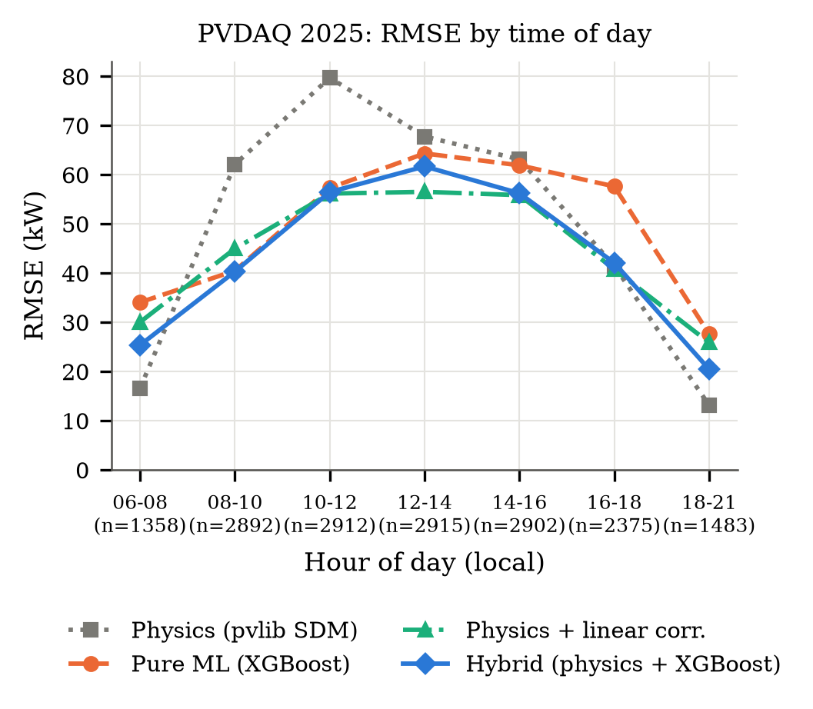

Abstract—Physics-based PV models such as the single-diode model (SDM) extrapolate reliably, but under partial shading they misestimate array power, because they use the mean irradiance and ignore mismatch and bypass-diode effects. Pure machine-learning (ML) models can learn these effects but fail outside their training range. We study a hybrid residual model that keeps the SDM prediction and learns only its error with gradient-boosted trees. It is given topology-aware inputs describing how shade falls across the array's strings. On 5,000 cell-level PVMismatch simulations of a 12-panel array, with seven out-of-distribution (OOD) regimes fixed before training, the hybrid lowers RMSE relative to the SDM by 70–86% in every regime (all OOD rows: 298.9 → 63.5 W). It outperforms pure ML (224.4 W) and constant-offset and linear corrections. On NREL PVDAQ field data (development year 2024, locked test year 2025), it lowers RMSE from 59.4 to 48.7 kW and beats pure ML by 4.7 kW (95% CI [−5.5, −4.0]); a linear residual correction is equally accurate there.
Index Terms—photovoltaics, partial shading, physics-guided machine learning, residual learning, XGBoost, out-of-distribution generalization.
I. Introduction
The single-diode model (SDM) [1], [2], as implemented in pvlib [3], is the standard physics model for PV power. It extrapolates well across irradiance and temperature, but it assumes that every cell receives the same irradiance. Under partial shading, shaded cells limit the current of their series string and bypass diodes conduct, so the power curve develops multiple peaks [4], [5]. An SDM driven by the mean irradiance cannot represent this: it overestimates power and gives the same answer for every arrangement of a given amount of shade.
Data-driven models such as XGBoost [6], [7] avoid fixed assumptions, but trees are piecewise constant and cannot extrapolate beyond their training range. Physics-guided ML [8], [9] combines the two. In its simplest form, residual learning, the ML model learns a correction to a physics prediction rather than the output itself.
Our contributions are: (i) a cell-level partial-shading benchmark with per-panel masks and seven OOD regimes fixed before training; (ii) topology-aware residual inputs derived from the array's series–parallel structure, which reduce the hybrid's error by 24–37%; (iii) comparisons against simple correction baselines (constant offset, linear residual) as well as pure ML; and (iv) a leakage-free field evaluation with day-block bootstrap confidence intervals.
II. Method
A. Models
With reference power Pref and residual ΔP = Pref − Pphys, we compare five predictors:
- Physics: Pphys from the CEC SDM at the array-mean irradiance, with SAPM cell temperature [10].
- Physics + offset: Pphys + mean(ΔPtrain).
- Linear correction: Pphys + wTX, a ridge regression fitted to ΔP.
- Pure ML: XGBoost trained on Pref.
- Hybrid: Pphys + gθ(X), with XGBoost gθ trained on ΔP.
Outside the training range, gθ saturates just as pure ML does, but it is added to Pphys, which keeps following the physical trend. Both XGBoost models use the same untuned settings: 300 trees, depth 4, learning rate 0.03, subsampling 0.8. Results use five seeds.
B. Inputs
The base simulation inputs are irradiance G, ambient temperature T, the twelve per-panel irradiance fractions Si, the number of shaded panels, and the mean and maximum shading severity.
A series string carries a single current and is limited by its weakest panel. We therefore add topology-aware inputs: for each string, the minimum and mean Si; across strings, the number of strings containing shade, the minimum and maximum string mean, and their spread.
For field data, the base inputs are POA irradiance, ambient and cell temperature, and wind. The +time set adds sin/cos of hour-of-day and day-of-year as a proxy for sun position.
C. Uncertainty
95% CIs come from 2,000 bootstrap resamples [11], paired across models for comparisons. Field readings at 15-min resolution are autocorrelated within a day, so we resample whole days (a block bootstrap [12]).
III. Data and Protocol
Simulation. PVMismatch [13] solves every cell's I–V curve, including bypass diodes, for a 3 × 4 array (three strings of four modules) of a 96-cell CEC module. This serves as Pref. Both simulators share one SAPM cell temperature, and unshaded they agree within ±5%.
Each row draws G ∈ [100, 1200] W/m², T ∈ [0, 60] °C and a mask. 70% of masks are random (0–4 panels) and 30% structured (single panel, same vs. different strings, uniform, gradient). OOD regimes are fixed in the generator: G ∉ [200, 1000] W/m², T ∉ [10, 45] °C, or a panel more than 65% shaded. This gives 1,686 IID and 3,314 OOD rows in seven groups.
Models are trained only on IID rows. The IID test uses five 80/20 splits; the OOD tests train on all IID rows.
A calibration check exposed a defect in the original generator: modules assembled from individually constructed cells collapsed at high cell temperature, producing 343 invalid rows (e.g. 4 W instead of about 700 W). We fixed it with PVMismatch's array-level temperature and irradiance setters.
Field data. NREL PVDAQ System 2107 [14] has measured DC power only for 2024 and 2025. 2024 (16,754 readings) is the development year: every choice, including the input set and the SDM's module-count scaling, is made there, with 6-fold CV in contiguous two-month blocks. 2025 (16,837 readings) is locked and used once. The system has no shading labels.
IV. Results
A. Simulation
Table I and Fig. 1 show that the hybrid with topology-aware inputs is the most accurate model in every regime. It reduces RMSE relative to the SDM by 86% IID and by 70–83% OOD, and it varies by only 0.4–4.5 W across seeds. A paired bootstrap shows it beats pure ML in every regime (from −19 W IID to −258 W G-OOD); none of the 2,000 resamples favours pure ML.
Pure ML fails whenever irradiance leaves the training range. In G-OOD it is worse than the SDM (326 vs. 324 W), and its predictions plateau near 3.5 kW (Fig. 2). The hybrid stays at 68 W. The offset and linear corrections remove part of the SDM's systematic overestimation (about 18% on average for shaded rows), but neither can represent the shading pattern, so both remain 1.9–3.2× worse than the hybrid.
Simulation RMSE (W), pooled over five seeds
| Test set | n | Phys. | +Off. | Lin. | ML | Hyb. | Hyb.† |
|---|---|---|---|---|---|---|---|
| IID | 338 | 263.9 | 174.2 | 83.5 | 56.2 | 36.9 | 58.2 |
| T-OOD | 1228 | 264.2 | 177.3 | 90.1 | 82.7 | 44.0 | 58.8 |
| G-OOD | 677 | 324.3 | 247.8 | 146.0 | 326.3 | 68.2 | 91.4 |
| S-OOD | 409 | 287.5 | 139.4 | 97.0 | 143.3 | 58.5 | 82.4 |
| T+S | 302 | 285.8 | 151.4 | 96.4 | 177.8 | 68.7 | 94.0 |
| G+T | 445 | 347.7 | 272.5 | 154.7 | 316.4 | 77.5 | 97.3 |
| G+S | 152 | 337.8 | 210.4 | 135.1 | 337.9 | 101.9 | 124.7 |
| G+T+S | 101 | 305.7 | 195.1 | 135.3 | 255.1 | 87.3 | 122.9 |
| All OOD | 3314 | 298.9 | 204.6 | 118.2 | 224.4 | 63.5 | 84.1 |


Effect of topology-aware inputs. Fig. 3 breaks the error down by shading pattern. With base inputs, the hybrid over-corrected where the SDM is already nearly right: under uniform shading it scored 97 W against 41 W, and with four panels in one string 231 W against 55 W. The string-level inputs lower these errors to 37 W (now better than the SDM) and 110 W. Across all regimes the hybrid improves by 24–37%.
The two most important inputs by XGBoost gain are the number of shaded strings (39%) and the spread between string means (21%), quantities the SDM cannot see. Shade concentrated in one string remains the only pattern where the SDM is more accurate, because there the true loss happens to match the mean-irradiance approximation.

B. Field data
Blocked CV within 2024 selected the +time inputs for every learned model (hybrid: 40.3 vs. 52.3 kW; better in all six folds). Table II gives the locked 2025 results.
PVDAQ 2107: train 2024, locked test 2025 (kW)
| Model | Inputs | RMSE [95% CI] | MAE | Bias |
|---|---|---|---|---|
| Physics | — | 59.4 [57.0, 61.6] | 41.9 | −26.8 |
| Phys.+offset | — | 53.5 [51.1, 56.0] | 37.1 | −7.6 |
| Pure ML | base | 56.2 [53.8, 58.7] | 39.1 | −8.0 |
| Hybrid | base | 56.0 [53.6, 58.4] | 39.0 | −8.6 |
| Linear corr. | +time | 48.5 [45.7, 51.2] | 33.0 | −6.8 |
| Pure ML | +time | 53.4 [50.9, 55.9] | 38.4 | −11.9 |
| Hybrid | +time | 48.7 [45.8, 51.4] | 33.2 | −7.5 |
Three findings stand out.
- Bias dominates with base inputs. The hybrid (56.0 kW) does not beat a constant offset (53.5 kW): most of its gain is the removal of the SDM's −26.8 kW bias.
- Time features give the real gain. The hybrid reaches 48.7 kW (−18% vs. the SDM, CI [−12.1, −9.1] kW) and beats pure ML by 4.7 kW (CI [−5.5, −4.0]).
- A linear correction suffices here (48.5 kW). On this unshaded system the residual is smooth.
By regime, the hybrid's error is 38% lower above 40 °C cell temperature and 35% lower at 08–10 h, where the SDM's temperature and angle-of-incidence approximations are weakest. Below 100 W/m², and at dawn and dusk (Fig. 4), it is worse than the SDM (21 vs. 15 kW below 100 W/m²), a small absolute error.

V. Discussion and Limitations
Residual learning pays off when the physics error is structured. Under shading, the same mean irradiance can mean anything from 2% to 33% overestimation, so the error depends nonlinearly on topology. A tree-based correction with string-level inputs captures this, whereas offset and linear corrections cannot. In the field data the error is mostly a smooth bias, so a linear correction is enough. In both settings, correcting physics clearly beats replacing it with pure ML.
Limitations. PVMismatch is itself a model and has not been validated against measured shaded arrays. The topology-aware inputs were motivated by error analysis rather than selected by a separate validation step; we report both variants. The field study covers one system without shading labels, uses time features as a stand-in for sun position, and relies on an estimated system scaling. Hyperparameters were not tuned. Future work: a low-irradiance fallback to the SDM, more PVDAQ sites with known geometry, and measured shading masks.
VI. Conclusion
An SDM plus an XGBoost residual correction with topology-aware inputs reduced PV power error under cell-level partial shading by 70–86% across IID and seven OOD regimes, and remained accurate where pure ML failed to extrapolate. String-level inputs were the most informative features. On real field data, under a strict chronological protocol, the hybrid reduced error by 18% and significantly outperformed pure ML. A linear correction matched it there, which shows that the value of a nonlinear correction depends on how structured the physics error is.
References
- W. De Soto, S. A. Klein, and W. A. Beckman, “Improvement and validation of a model for photovoltaic array performance,” Solar Energy, vol. 80, no. 1, pp. 78–88, 2006.
- A. P. Dobos, “An improved coefficient calculator for the California Energy Commission 6 parameter photovoltaic module model,” J. Sol. Energy Eng., vol. 134, no. 2, 2012.
- W. F. Holmgren, C. W. Hansen, and M. A. Mikofski, “pvlib python: a python package for modeling solar energy systems,” J. Open Source Softw., vol. 3, no. 29, p. 884, 2018.
- J. W. Bishop, “Computer simulation of the effects of electrical mismatches in photovoltaic cell interconnection circuits,” Solar Cells, vol. 25, no. 1, pp. 73–89, 1988.
- H. Patel and V. Agarwal, “MATLAB-based modeling to study the effects of partial shading on PV array characteristics,” IEEE Trans. Energy Convers., vol. 23, no. 1, pp. 302–310, 2008.
- J. Antonanzas et al., “Review of photovoltaic power forecasting,” Solar Energy, vol. 136, pp. 78–111, 2016.
- T. Chen and C. Guestrin, “XGBoost: A scalable tree boosting system,” in Proc. 22nd ACM SIGKDD, 2016, pp. 785–794.
- G. E. Karniadakis et al., “Physics-informed machine learning,” Nat. Rev. Phys., vol. 3, pp. 422–440, 2021.
- J. Willard, X. Jia, S. Xu, M. Steinbach, and V. Kumar, “Integrating scientific knowledge with machine learning for engineering and environmental systems,” ACM Comput. Surv., vol. 55, no. 4, 2022.
- D. L. King, W. E. Boyson, and J. A. Kratochvil, “Photovoltaic array performance model,” Sandia Nat. Labs., Rep. SAND2004-3535, 2004.
- B. Efron and R. J. Tibshirani, An Introduction to the Bootstrap. New York: Chapman & Hall, 1993.
- H. R. Künsch, “The jackknife and the bootstrap for general stationary observations,” Ann. Statist., vol. 17, no. 3, pp. 1217–1241, 1989.
- SunPower Corp., “PVMismatch,” [Online]. Available: github.com/SunPower/PVMismatch
- National Renewable Energy Laboratory, “PVDAQ public datasets,” Open Energy Data Initiative. [Online]. Available: data.openei.org